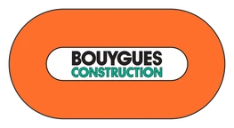
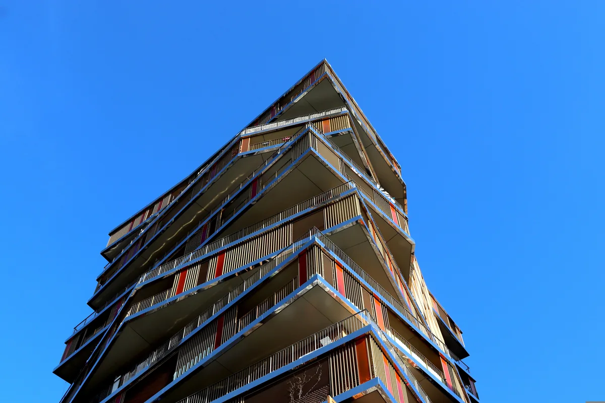

Combien vous a coûté votre dernier retard ?Un retard détecté trop tard
SNotre réponse
Concorde croise planning et avancement pour signaler la dérive avant qu’elle soit actée.
On reprend le site de CUBO. Proposition de refonte en cours, ce n’est pas le site officiel. Le site actuel →
Concorde by CUBO collecte, structure et croise les données de tous les outils d’une opération de construction. Sam y répond, et chaque réponse cite la pièce, sa version et sa date. Plateforme IA native, développée et hébergée en France.
Le lot CVC a démarré sans plans bons pour exécution : la révision C du plan de réseaux n’était pas visée1. Le retard a été signalé au compte rendu de chantier suivant2, et l’ordre de service qui décale la zone B y est rattaché3. Les échanges montrent que la demande de visa a été faite dans les délais contractuels4.
Exemple illustratif, données fictives

Planning, coûts, GED, comptes rendus, courriels. Les écarts se découvrent trop tard, quand ils coûtent déjà. Voici les questions que vos outils ne savent pas croiser.
Combien vous a coûté votre dernier retard ?Un retard détecté trop tard
Concorde croise planning et avancement pour signaler la dérive avant qu’elle soit actée.
Quelle part de votre dernière réclamation avez-vous perdue faute de preuves ?Une modification mal documentée
Chaque modification reste rattachée à ses pièces datées : OS, comptes rendus, échanges.
Combien d’OS et de non-conformités sont encore ouverts sur vos opérations ?Des exigences mal suivies
Concorde suit chaque exigence contractuelle jusqu’à sa levée.
Sur quelles données avez-vous fondé votre dernier arbitrage ?Une décision sans vision fiable
Coûts, engagements et avancement sont croisés et datés : chaque donnée dit d’où elle vient.
Que reste-t-il du dossier quand votre chef de projet change de poste ?Une passation qui efface la mémoire
La mémoire reste dans la plateforme. Ceux qui reprennent l’interrogent.
Une dérive vue au point mensuel est déjà actée. Concorde croise planning, avancement et pièces : quand un lot glisse, l’alerte arrive avec ses preuves datées.
Mémoire du projet
Chaque discipline décrit la même opération, avec ses propres identifiants. Concorde les rapproche. Croisées, elles révèlent ce qu’aucun outil ne voit seul.
Planning
Croisé avec :
Choisissez une discipline pour voir ce qu’elle révèle une fois croisée.
Concorde by CUBO
Concorde collecte ce que produisent vos outils, le structure et le croise dans votre mémoire projet. Votre cockpit, Sam et vos agents l’exploitent ensuite.
La base
Piloter
Interroger
Déléguer
Nous avons exercé le métier que nous outillons.
Le maître d’ouvrage protège son budget, la maîtrise d’œuvre sa mission, l’entreprise sa marge. Tous dépendent de la même donnée.
MOA privée · MOA publique · Promoteur · Foncière · AMO
Une dérive vue au point mensuel est déjà actée. Vous arbitrez trop tard.Notre approche
MOEX · Architecte · OPC · BET
Un retard mal imputé ou une modification sans trace se paient sur votre mission.Notre approche
Entreprise générale · Groupement · Conduite de travaux
Sans preuves datées, une réclamation se perd. Et la marge avec.Notre approche
La souveraineté est un choix d’architecture, fait dès le premier jour.
Par défaut, une infrastructure opérée chez OVHcloud, opérateur français certifié jusqu’aux qualifications requises par les données les plus sensibles.
Par défaut, les modèles d’IA sont hébergés en France. Vos documents n’entraînent jamais un modèle tiers.
Aucune donnée ne passe d’un compte à l’autre. Ce qui appartient à votre entreprise reste dans votre périmètre.
Pour les opérations qui n’autorisent aucune sortie de données, la plateforme s’installe dans votre propre infrastructure.

Non. Concorde est une surcouche : elle ne remplace ni la GED, ni le planning, ni l’outil financier. Elle se branche au-dessus, centralise ce que ces sources produisent, en garantit la fraîcheur et la cohérence, puis l’exploite. Chacun de vos outils est bon dans son domaine ; le problème est ce qui se passe entre eux.
Les éditeurs installés sont puissants sur l’exécution et la conformité documentaire, plus faibles sur l’exploitation analytique et l’intelligence artificielle, et la plupart sont hébergés hors d’Europe.
Oui. Créez un projet, déposez vos documents et interrogez Sam. Deux projets de démonstration, issus de dossiers de consultation réels, servent de point de comparaison.
Contactez-nous pour échanger sur vos enjeux et découvrir Concorde. N’attendez pas qu’ils fassent dériver vos opérations.